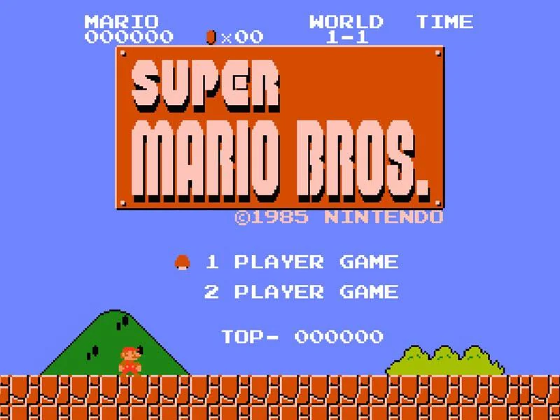
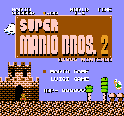

The Super Mario Bros. series on the NES began in 1985 with Super Mario Bros., introducing players to Mario and Luigi as they journey through the Mushroom Kingdom to rescue Princess Peach from Bowser. The games are classic 2D side-scrolling platformers, featuring precise jumping, power-ups like the Super Mushroom and Fire Flower, and increasingly challenging worlds filled with enemies, secrets, and obstacles. Super Mario Bros. 2 (the U.S. version) added multiple playable characters with unique abilities, while Super Mario Bros. 3 expanded exploration with an overworld map, new power-ups like the Super Leaf, and more varied level design. Across the NES entries, the series combined tight controls, imaginative levels, and colorful graphics, setting the foundation for Mario as Nintendo’s flagship franchise.

Super Mario Bros. (1985): The original NES hit introduces Mario and Luigi on a quest to save Princess Peach from Bowser. Players navigate side-scrolling levels full of Goombas, Koopa Troopas, pits, and pipes, using power-ups like the Super Mushroom and Fire Flower to survive. Its precise controls, catchy music, and inventive stage design set the standard for 2D platformers.
Super Mario Bros.: The Lost Levels (1986, Japan only): Released in Japan as Super Mario Bros. 2, this direct sequel keeps the same graphics and mechanics as the original but greatly increases difficulty. It features trickier level layouts, new enemy placements, and requires precise timing, appealing to hardcore players seeking a true challenge.

Super Mario Bros. 2 (1988, U.S.): Known in the U.S. as the “American SMB2,” this entry departs from traditional mechanics, letting players choose from Mario, Luigi, Peach, or Toad, each with unique abilities. Players pick up and throw objects to defeat enemies rather than jumping directly on them, offering a fresh, strategic twist on the formula.
Super Mario Bros. 3 (1990): Expands the series with an overworld map, new power-ups like the Super Leaf, Tanooki Suit, and Frog Suit, and highly varied stages across eight themed worlds. The game combines exploration, secret areas, and creative level design, making it one of the most acclaimed NES games and a landmark in platforming history.